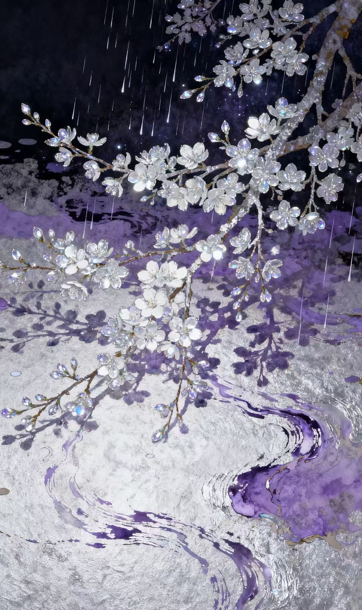

向下滚动 探索作品4 大分组：AI 创作工具 · 设计与动效 · 游戏交互前端 · 其他能力。
核心竞争力：ComfyUI 节点化工作流 + WebUI/Stable Diffusion 管线 + 即梦/可灵/Seedance/Midjourney，能从 LoRA 选型、参数调优，一直做到多模态整合输出。
以 After Effects 为主力动效工具，Figma 负责界面和 IP 规范输出，3ds Max 承担 3D 资产建模与静帧渲染。
Unity 做游戏原型与交互装置，HTML/CSS 做静态站点落地，小程序开发做轻量应用与校园工具。
视频剪辑、脚本创作、摄影基础——让作品从概念到交付可以一个人闭环推进。
4 大分类直通，点击即到作品列表，再选作品就是详情。